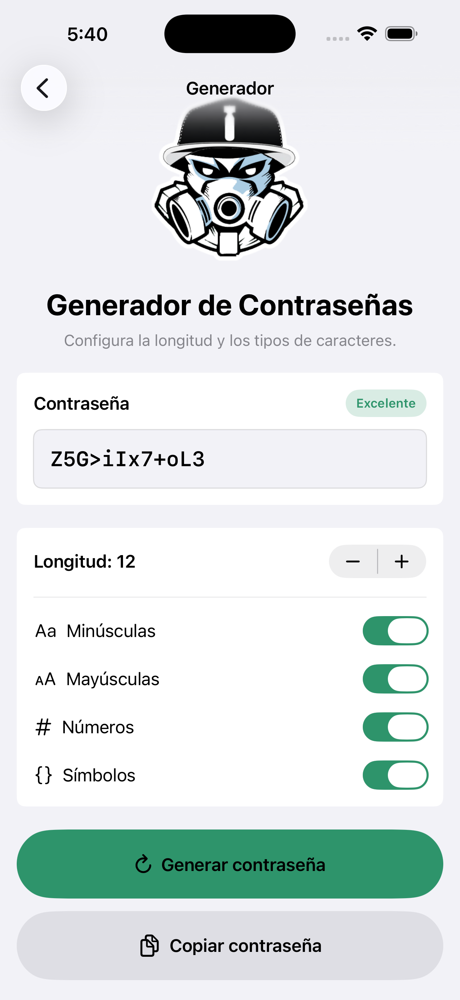

PassGenerator iOS
Aplicación nativa
Aplicación nativa con SwiftUI y NavigationStack. Genera contraseñas con aleatoriedad segura, indicador de fortaleza y una interfaz accesible en modo claro y oscuro. Usa SecRandomCopyBytes y muestreo con rechazo para evitar sesgo. Garantiza caracteres de cada categoría seleccionada y confirma el copiado al portapapeles de forma accesible.
- SwiftUI
- NavigationStack
- SecRandomCopyBytes